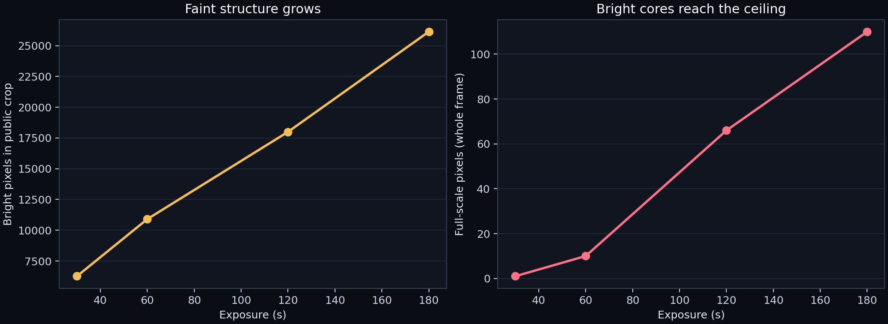
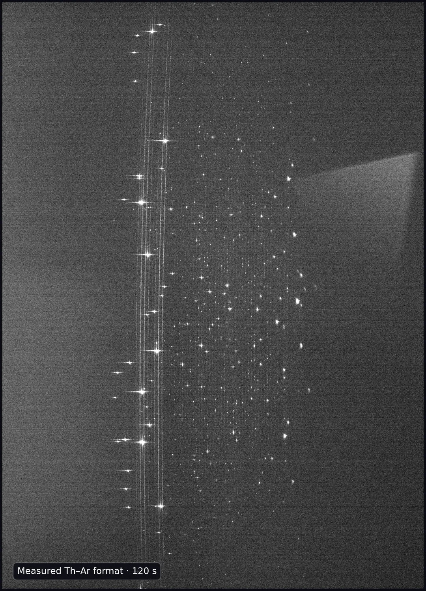

Bright-core guard
Preserves the strongest features.
A measured light source · four exposure times
This is a thorium–argon calibration lamp seen through EXOhSPEC. Each bright feature is light recorded by a ZWO CMOS detector. The goal is simple: reveal faint structure without flattening the brightest cores.

01 · The exposure decision
The short frame keeps headroom in the bright cores. The long frame reaches faint structure. The 120 s image lands between those demands; using all four frames produces the most legible composite.
Preserves the strongest features.
Adds faint signal while retaining headroom.
The clearest one-frame compromise.
Useful where bright pixels remain below full scale.

02 · The calibration lamp
A hollow-cathode discharge excites atoms and ions in the lamp. As they return to lower-energy states, they emit light at discrete wavelengths. Thorium supplies a dense set of sharp reference features; argon sustains the discharge and contributes its own features.
Once known wavelengths are matched to detector positions, the mapping turns pixels into a wavelength scale. That scale lets a spectrograph measure tiny stellar shifts used in radial-velocity work.
The discharge gives atoms and ions energy.
Transitions release discrete wavelengths.
EXOhSPEC separates the light into a spectral format.
Validated peaks are paired with laboratory reference wavelengths.
A fitted solution maps detector position to wavelength.
03 · From four frames to one view
The composite is based on relative signal rate. The longest exposure provides faint information; a shorter exposure replaces any pixel that approaches the detector ceiling. An asinh stretch changes only the display, allowing bright and faint features to share one image.

04 · What we do not claim
This release does not publish a wavelength solution, atomic labels, detector model, optical layout, or raw FITS headers. Line names will be added only after order tracing, reference matching, blend rejection, and residual validation.
Measured
Background, headroom, relative signal, and a privacy-safe spectral crop.
Pending
Requires a validated pixel-to-wavelength model and reference-line matching.
Withheld
Exact detector model, geometry, headers, optical configuration, and local paths.
05 · Provenance